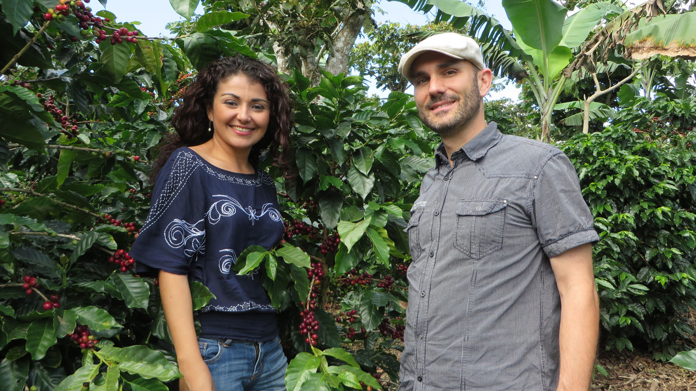
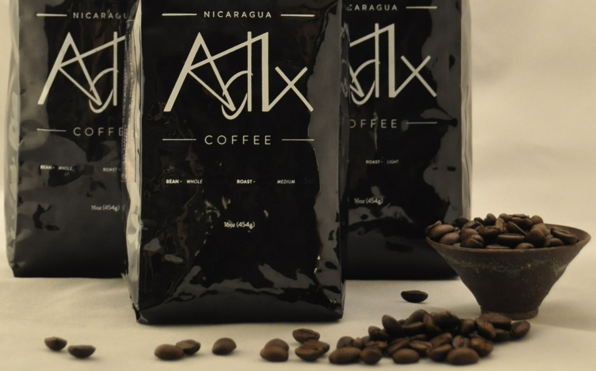
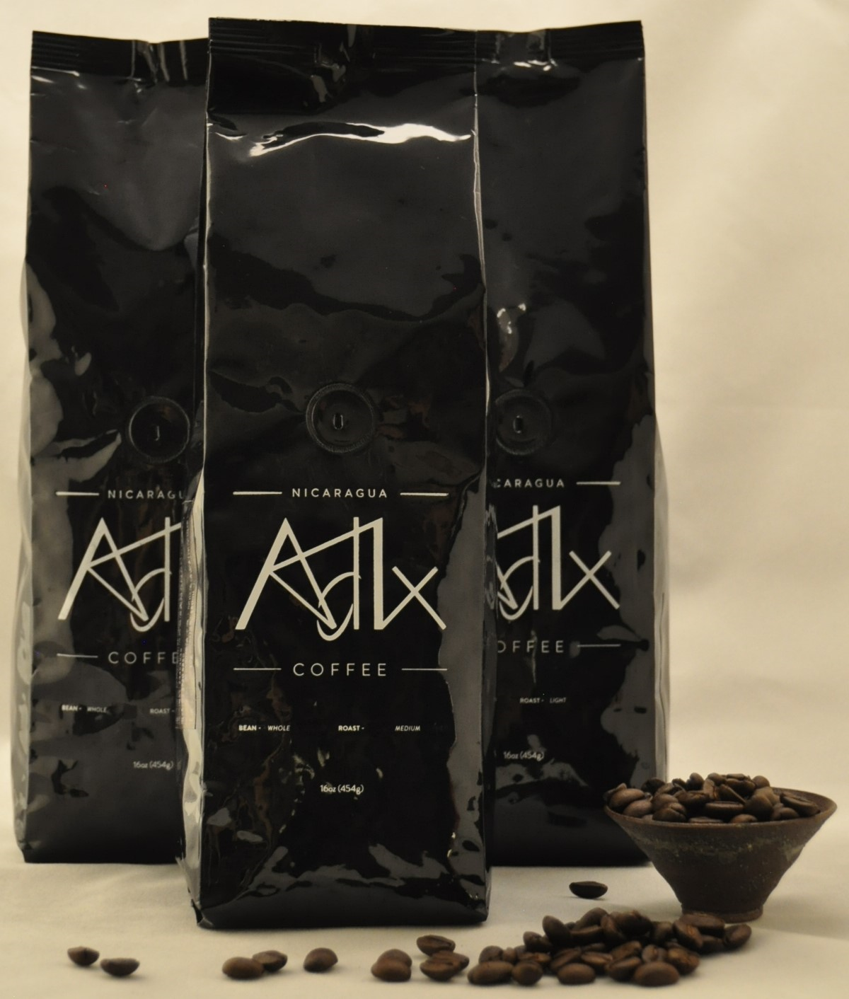
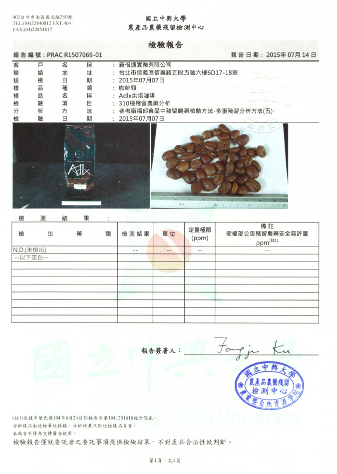

<div class="container-fluid">
    <!--<header class="pager">
        
    </header>-->

    <section>

        <ul id="diveInfo" class="nav nav-tabs nav-justified" role="tablist">
            <li class="active">
                <a href="#CoffeeNowIntro" showtab="" role="tab" data-toggle="tab">
                    <b>關於我們</b>
                </a>
            </li>
            <li>
                <a href="#CoffeeIntro" showtab="" role="tab" data-toggle="tab">
                    <b>咖啡介紹</b>
                </a>
            </li>
            <li>
                <a href="#QCReport" showtab="" role="tab" data-toggle="tab">
                    <b>安全檢驗報告</b>
                </a>
            </li>
        </ul>

        <div class="tab-content">
            <div class="tab-pane fade in active" id="CoffeeNowIntro">
                <h2>關於我們</h2>
                <div class="pager">
                    
                </div>
                <p>
                    <h4>讓您品嚐產地直送的新鮮咖啡！</h4><br />
                    <h4>您有吃過產地直送的蔬菜跟水果，但是您有喝過產地直送的高山咖啡嗎？</h4><br />
                    <h4>咖啡佬與尼加拉瓜的 AdIx 莊園合作，將當地農夫新鮮採收的咖啡直接空運來台讓台灣的咖啡愛好者可以品嚐到香醇濃郁的高品質咖啡。</h4><br />
                    <h4>
                        2015 年進口的 AdIx 莊園咖啡產自於尼加拉瓜海拔1400公尺的艾兒庫阿(El Cua Jinotega)與馬塔加爾帕(Matagalpa)高山區，
                        在好山好水天然無污染的絕佳環境及肥沃的火山土壤孕育之下，當地小農以自然農法細心照料種植出頂級SHG(Strictly High Grown)的咖啡豆
                        ，每批咖啡都通過公正單位的農藥殘留檢驗。
                    </h4><br />
                    <h4>
                        採用費時費工但最環保的自然日曬法，讓咖啡豆可以吸收整顆果粒的精華，每顆咖啡豆都果香濃郁，味道香醇甘甜。
                        沖泡後的 AdIx 莊園咖啡都可以獲得測杯評鑑80分以上的高分，在全球只有15%的咖啡可以達到這樣的水準。
                    </h4><br />
                    <h4>
                        在因緣際會下結識在尼加拉瓜，四代種植咖啡超過80年的Torrez 家族，得以讓在台灣的咖啡愛好者享受由產地直送，新鮮高品質的香醇咖啡，
                        讓我們放鬆心情休息一下，享受 AdIx coffee 所帶來的味覺與嗅覺的SPA之旅!
                        <br /><br />
                        每包（一磅）售價$900，有輕、中、重烘培三種選擇，量大另有優惠請來電洽詢。<br />
                        輕烘培，含淡淡的青草，木頭香味及果香，帶有淺淺會回甘的順口酸味。<br />
                        中烘培，濃郁的果香及輕輕的草香加上微微順口的酸，入口後有不同的層次感。<br />
                        重烘培，帶有果香及炭火香，入口後香醇濃郁，厚重的咖啡香長留口中。
                    </h4><br />
                    <h4>由於咖啡屬於季節性農產，加上能夠種植出高品質咖啡豆的農地產量有限一年一耕，要買要快，錯過了就要等明年了！</h4>
                </p>
                <h2>咖啡佬的目標 – 給消費者產地直送的咖啡，改善咖啡農的生活條件讓它們能持續供應高品質的咖啡</h2>
                <p>
                    <h4>
                        在尼加拉瓜的農民由於缺乏與消費者直接溝通的橋樑跟能力，往往必須將他們辛苦耕耘的咖啡沒有選擇的賣給大盤商，無論對方開的價格合不合理。
                        這樣的現象造成惡性的循環，農民貧窮無力去改善農場耕種的及咖啡加工的手法。 透過直接與農民接觸，產地直送可以避免農民被不必要的剝削，
                        給他們的勞力一個公平而安定的價格回報，讓當地農民可以致力於咖啡樹耕種改良，土壤的培養保護及咖啡製作設備的投資，如此咖啡農才能安心持續地提供高品質咖啡給您。
                        我們誠心邀請您成為改變咖啡供應鏈的一員，讓小農都可以出頭天。
                    </h4><br />
                </p>
            </div>
            <div class="tab-pane fade" id="CoffeeIntro">
                <h2>咖啡介紹</h2>
                <div class="pager">
                    
                </div>
                <p>
                    <h4>
                        由於咖啡屬於季節性農產，加上能夠種植出高品質咖啡豆的農地產量有限一年一耕，要買要快，錯過了就要等明年了！
                        <br /><br />
                        每包（一磅）售價$900，有輕、中、重烘培三種選擇，量大另有優惠請來電洽詢。<br />
                        輕烘培，含淡淡的青草，木頭香味及果香，帶有淺淺會回甘的順口酸味。<br />
                        中烘培，濃郁的果香及輕輕的草香加上微微順口的酸，入口後有不同的層次感。<br />
                        重烘培，帶有果香及炭火香，入口後香醇濃郁，厚重的咖啡香長留口中。
                    </h4>
                    <div class="pager">
                        
                    </div>
                </p>
            </div>
            <div class="tab-pane fade" id="QCReport">
                <h2>安全檢驗報告</h2>
                <div class="pager">
                    
                </div>
            </div>
        </div>
    </section>
</div>